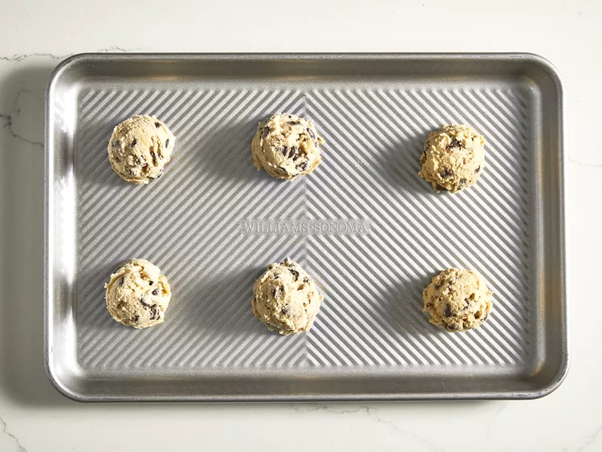
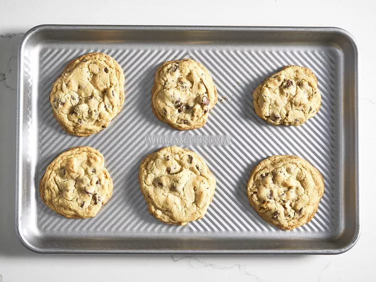

Chocolate Chip Cookies

This chocolate chip cookie recipe makes delicious cookies
with crisp edges and chewy middles.
Ingredients
- 1 cup butter, softened
- 1 cup white sugar
- 1 cup packed brown sugar
- 2 eggs
- 2 teaspoons vanilla extract
- 1 teaspoon baking soda
- 2 teaspoons hot water
- ½ teaspoon salt
- 3 cups all-purpose flour
- 2 cups semisweet chocolate chips
- 1 cup chopped walnuts
Directions
- Gather your ingredients, making sure your butter is softened,
and your eggs are room temperature.
- Preheat the oven to 350 degrees F (175 degrees C). Beat butter, white sugar,
and brown sugar with an electric mixer in a large bowl until smooth.

- Beat in eggs, one at a time, then stir in vanilla.

- Dissolve baking soda in hot water. Add to batter along with salt.

- Stir in flour, chocolate chips, and walnuts.

- Drop spoonfuls of dough 2 inches apart onto ungreased baking sheets.

- Bake in the preheated oven until edges are nicely browned, about 10 minutes.

- Cool on the baking sheets briefly before removing to a wire rack to cool completely.

- Store in an airtight container or serve immediately and enjoy!